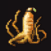
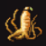

高麗人参：0.2 ペンネ/EXP
 冬虫夏草：0.214 ペンネ/EXP
冬虫夏草：0.214 ペンネ/EXP まんどらごら：0.225 ペンネ/EXP
まんどらごら：0.225 ペンネ/EXP 竜骨：0.225 ペンネ/EXP
竜骨：0.225 ペンネ/EXPとなり、「まんどらごら」と「竜骨」が1 ペンネあたりに得られる経験値が高いことが分かります。てっきり「竜骨」が一番高いと思っていたのですが、意外な結果でした。
目次 > ゲームについて > 日本Falcom 攻略 > ZWEI II > 情報
らんの眼
ZWEI II (ツヴァイ 2、ZWEI II Plus)
| 概要 | 情報 | 攻略チャート |
| フード交換 | ペットについて | ボス戦 |
| 敵キャラ一覧 | ハンターランク | G-コロッセオ |
| アイテム一覧 | ガジェット一覧 | トレジャー一覧 |
| ダンジョン一覧 | クリアデータ特典 | Plusの追加要素 |
| ZWEI II攻略へ | 目次へ戻る |
| [ 1 ] [ 2 ] [ 3 ] [ 4 ] [ 5 ] [ 6 ] [ 7 ] |
| データをあさってみると |
| 一部の「iti」ファイルは、拡張子を「jpg」に変えるだけで、画像を見ることができます。その中から、制作途中に作られたと思われるファイルをちょっと紹介。 (「月の遺跡」などZWEI II に通じる場所もありますね) (どこかのマップなのでしょうか?) (05：伏せアドル跳ね除け がとても気になります) |
| データをあさってみると2 |
| ZWEI II の実行ファイルがあるフォルダにある、「bin」というフォルダを開くと、いくつかDLL ファイルがあります。その中の「APP.DLL」と「APP8.DLL」をバイナリエディタなどで開くと、「GURUMIN」で使われていたメッセージを見ることができます。 GURUMIN とゲームエンジンが同じなので、間違って置きっぱなしになっていた、なんてことはないでしょうけれど。 |
| 経験値だけが得られるフードについて |
| 経験だけが得られるフードの、1 ペンネあたりの経験値を計算してみると、 高麗人参：0.2 ペンネ/EXP 冬虫夏草：0.214 ペンネ/EXPまんどらごら：0.225 ペンネ/EXP竜骨：0.225 ペンネ/EXPとなり、「まんどらごら」と「竜骨」が1 ペンネあたりに得られる経験値が高いことが分かります。てっきり「竜骨」が一番高いと思っていたのですが、意外な結果でした。 |
| 存在感のある紙吹雪 |
| アウロン大鉄塔や星ヶ峰には的を持った敵が現れます。この敵に攻撃が当たると、「ぽんっ」という効果音と共に紙吹雪が出るのですが、この紙吹雪はオブジェクトの1 つとして処理されているらしく、表示中は壁と同じ存在になります。 |
| 大熊猫楼の交代時間 |
| 大熊猫楼では、Windows の時計で、0 分から 30 分の間はホアンがカウンターに立ち、31 分から59 分の間はメイがカウンターに立つようです。例外もたまにあるようですが・・・。 |
| 誰が拾うの? |
| 何らかの原因で主人公達が移動できない場所に落ちたお金やフードは、自動的に拾ったことになる場合があります。 星ヶ峰 でよく見られる現象なのですが、誰が拾っているのでしょうか・・・。 |
| [ 1 ] [ 2 ] [ 3 ] [ 4 ] [ 5 ] [ 6 ] [ 7 ] |
| 概要 | 情報 | 攻略チャート |
| フード交換 | ペットについて | ボス戦 |
| 敵キャラ一覧 | ハンターランク | G-コロッセオ |
| アイテム一覧 | ガジェット一覧 | トレジャー一覧 |
| ダンジョン一覧 | クリアデータ特典 | Plusの追加要素 |
| ページの上部へ | ZWEI II 攻略へ | 目次へ戻る |